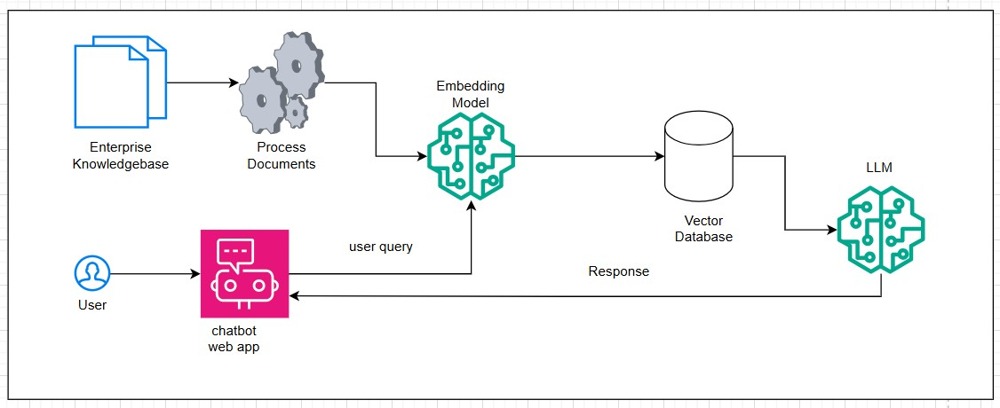

My MTech research focuses on improving machine translation for extremely low-resource Indic languages like Assamese and Odia through innovative multi-agent AI systems.
The Suffering of Low-Resource Languages Due to Lack of Digital Text Corpora
Extremely low-resource (ELR) Indic languages such as Assamese and Odia face severe challenges in neural machine translation (NMT) due to the chronic scarcity of high-quality parallel corpora. NMT quality directly correlates with the scale and diversity of training data, but these languages have significantly fewer resources compared to high-resource pairs like Hindi-English. This data scarcity leads to substantial performance gaps, where even moderate domain shifts cause dramatic degradation in translation quality.
The lack of digital text corpora manifests in multiple ways: insufficient supervision signals for robust generalization, limited variety in training examples that prevents effective interpolation for new inputs, and an inability to capture the full linguistic richness of morphologically complex languages. Synthetic data generation through back-translation, while helpful, often introduces artifacts like literal word-order structures, semantic drift, and reduced cultural naturalness, further degrading model performance.
For languages with agglutinative morphology and postpositional case systems like Assamese and Odia, these artifacts are particularly damaging. Collapsed morphological inflections, untranslated English tokens, and drifted paraphrases that don't reflect natural usage patterns compound the problem, creating a vicious cycle where poor synthetic data leads to even poorer models.
Current Challenges in Machine Translation for ELR Indic Languages
The primary challenge is data scarcity compounded by domain imbalance. Existing Indic benchmarks show consistent large performance gaps between high-resource and ELR language pairs. Even with thousands of sentence pairs, ELR models struggle with generalization, especially when encountering out-of-domain inputs.
Back-translation, the dominant augmentation strategy, introduces characteristic artifacts: word-order calques from the pivot language, collapsed verb conjugations and case markers, and semantically drifted outputs that lack cultural grounding. For morphologically rich languages, these artifacts pose severe quality issues, as critical grammatical information is lost or distorted.
Direct translation approaches suffer from extremely limited supervision, making it difficult to learn robust representations. Hardware constraints in academic settings further limit the ability to train large models, while the computational cost of generating and filtering synthetic data adds another layer of complexity.
Quality control mechanisms are inadequate; existing filtering based on cross-lingual similarity scores captures volume but not linguistic fidelity or pragmatic naturalness. This results in noisy corpora that propagate errors through the learned representations of downstream models.
Objective of the Research Work
The research aims to develop an autonomous multi-agent orchestration framework (AMAO) for quality-aware synthetic data curation in ELR Indic machine translation. The objective is to overcome data scarcity limitations by generating high-quality synthetic parallel corpora that preserve linguistic fidelity and cultural naturalness, enabling robust NMT models for low-resource Indic languages like Assamese and Odia.
Expected Outcomes and Impact
The research expects AMAO to outperform static back-translation by producing cleaner synthetic corpora free of low-quality artifacts. This will enable more reliable NMT models for ELR Indic languages, supporting digital inclusion and preserving linguistic diversity in the NLP world.
Broader impact includes methodological contributions to multi-agent translation workflows, parameter-efficient adaptation techniques, and quality-gated synthetic data curation frameworks applicable to other low-resource language pairs.
🚀 Welcome to my Blog
Here, I share my experiences and insights on various topics,
covering technology strategy, cloud computing, and artificial intelligence. Stay tuned for regular updates!
⚙️ How AIOps Builds the Right Production System
🔖 AIOps, Production Reliability
Strong production systems require AIOps to detect issues early, automate remediation, and keep services resilient as scale grows.
Production systems are constantly changing: services are deployed, configuration updates happen, user traffic spikes, and dependencies evolve. Without AIOps, teams react to incidents manually, which is slow and error-prone. AIOps brings automation and intelligence to operational processes so systems stay healthy and reliable.
AIOps agents collect data from logs, metrics, traces, and configuration management. They establish baseline behavior and can detect anomalies in real time. For example, if response latency increases by 30% in one service while error rates are unchanged, AIOps can correlate this with a recent deployment and alert the team or trigger an automatic rollback.
These agents also support root cause analysis. They can map service dependencies, understand which components are impacted, and suggest the most likely cause. This reduces mean time to repair (MTTR) dramatically. Instead of manually searching across dozens of dashboards, engineers get precise insight quickly.
Automation is a second key benefit. AIOps can run predefined runbooks when problems are detected: restarting services, scaling resources, clearing caches, or applying configuration fixes. For common incidents, this avoids human intervention entirely, letting teams focus on strategic work instead of firefighting.
Another strength is proactive optimization. AIOps identifies recurring issues and recommends improvements before they become outages. It can spot patterns like memory leaks, inefficient queries, or frequent deployment failures, and suggest changes to prevent these problems from becoming critical.
Finally, AIOps helps with compliance and reporting. It records actions taken, alerts fired, and changes applied, creating a reliable audit trail. This is vital for regulated industries where production changes must be documented and reviewed.
In short, right production systems are not just built; they are continuously maintained with AIOps. This enables safer scaling, faster incident resolution, and a resilient foundation for delivering business value.
🛠️ How Agents Speed Application Modernization
🔖 Application Modernization, System Understanding
Agents can help teams understand legacy systems and fast-track modernization efforts by automatically mapping behavior and dependencies.
In application modernization, one of the hardest steps is understanding what the existing system does today. Legacy applications are often poorly documented and have been touched by many developers over years. Autonomous agents can scan code, trace runtime behavior, capture data flows, and translate that into human-readable diagrams and reports.
These agents can act like expert consultants, identifying key modules, APIs, and integration points. They can observe how third-party libraries are used, which data fields travel between components, and where bottlenecks occur. This visibility reduces risk by giving teams confidence in what they are changing, instead of relying on guesswork.
Agents also support collaborative analysis. They can generate interactive documentation for developers and architects, highlighting problematic regions and suggesting refactor paths. For example, they can identify a monolithic module handling both user auth and business rules and recommend splitting those into separate microservices for easier maintenance.
Another powerful use case is dependency discovery. Agents can detect hidden dependencies on external systems (database schemas, file stores, message queues) and surface them before modernization changes cause outages. This is especially useful when an application depends on legacy APIs that are no longer supported.
Not only do agents accelerate understanding, they also make migration safer through automated testing. They can run baseline behavior tests on the legacy system, then compare results after each incremental modernization step. This creates a safety net so teams can move quickly while protecting existing functionality.
Finally, by continuously monitoring the modernized application, agents can identify drift and regressions over time. Modernization is not a one-time project; it’s an ongoing evolution. Agents provide continuous insights, ensuring the system remains healthy and aligned with business goals over years.
🏗️ Agentic Architecture in Enterprise Systems
🔖 Agentic AI, Enterprise Architecture
Designing systems where autonomous agents collaborate with human workflows, with strong governance and orchestration.
Agentic architecture represents a fundamental shift in how enterprises build systems. Instead of requiring humans to manually execute every task or decision, autonomous agents—AI-powered software components—can handle increasingly complex decisions and workflows on their own. These agents learn from patterns, adapt to new situations, and execute tasks without constant human intervention.
Think of an agent as a smart assistant that understands your business rules deeply. When a customer request comes in, the agent can assess the situation, check policies, coordinate with other systems, and take action—all within defined boundaries. For example, a customer service agent might automatically approve a refund for a loyal customer who had a bad experience, or escalate complex cases to human experts.
The architecture of these systems is crucial. Modern enterprises are adopting service fabrics where agentic modules act as autonomous decision points. These agents are plugged into several critical layers: policy gateways that enforce business rules, audit trails that log every action for compliance, and orchestration layers that coordinate between multiple agents working on the same problem.
A key advantage is responsiveness. Traditional systems force humans to queue requests and process them one by one. Agentic systems can handle thousands of parallel workflows, making decisions instantly. This dramatically improves speed without sacrificing quality or compliance. Banks can approve loans faster, e-commerce platforms can process returns instantly, and hospitals can route urgent cases to the right specialists immediately.
However, enterprises must maintain governance. Every decision an agent makes must be traceable—you need to know why an agent made a particular choice for compliance and debugging purposes. This is where policy gateways come in. They act like guardrails, ensuring agents can only make decisions that align with company policy. Audit trails record everything, creating a complete history for regulatory reviews.
Implementation challenges include getting the policy definitions right, ensuring agents work well together when coordinating complex workflows, and maintaining system reliability when agents must make mission-critical decisions. Organizations must also invest in monitoring systems to detect when agents behave unexpectedly or when they need retraining due to changing business conditions.
🚀 Autonomous AI Product Engineering Playbooks
🔖 Product Engineering, AI Lifecycle
Playbooks for product teams to build agentic capabilities into digital products with rapid experimentation.
Building products with agentic AI requires a different mindset than traditional product development. Product teams need playbooks—tested, repeatable processes—to safely introduce autonomous capabilities while continuously learning and improving. This approach balances innovation speed with user safety and satisfaction.
The first key practice is using feature flags. These are like switches that turn agent capabilities on or off for specific users. A product team might enable an agent feature for 5% of users initially, monitor how it performs, and gradually increase to 10%, 25%, and finally all users. This allows teams to catch problems early affecting only a small group rather than breaking the product for everyone.
Metric-driven rollout means you don't just guess whether your agent works well. You define specific metrics that matter for your product: response time, user satisfaction scores, error rates, task completion rates, and more. Before rolling out to more users, the team reviews these metrics. If accuracy dropped or users started complaining, the team pauses the rollout and investigates.
Continuous feedback loops are essential. Product teams actively collect user feedback during testing—not just through ratings, but through direct conversations, usage patterns, and behavioral signals. If users frequently override the agent's suggestions, that's valuable data indicating the agent isn't trustworthy yet. If users love a particular agent behavior, that insight helps prioritize improvements.
Customer experience validation in production means observing real users in the real world, not just in lab tests. Sometimes features that look perfect in testing fail in the wild because of unexpected user behaviors or edge cases engineers didn't anticipate. By monitoring production carefully, teams catch these issues quickly.
The playbook also includes A/B testing: compare a product version with the agent enabled against one without it. Do users achieve their goals faster? Are they happier? If the agent helps, expand it. If not, understand why and iterate. This scientific approach removes guesswork from product development with AI.
Important practices include automatic logging of agent decisions for analysis, rapid iteration cycles (daily or weekly improvements, not quarterly releases), and clear escalation paths when agents encounter situations they can't handle. Success requires collaboration between data scientists who build the agents, engineers who integrate them into products, and product managers who ensure teams are solving real user problems.
🛡️ Production AI Systems Reliability & Observability
🔖 Reliability, Observability
How to maintain production-grade availability and trust for agentic AI systems using robust observability.
Traditional software systems fail in predictable ways: a database goes down, a server crashes, a network cable is unplugged. These failures are obvious and teams know how to respond. AI systems fail differently and often silently. An agent might make incorrect decisions gradually over time without anyone noticing, or it might perform perfectly for weeks then suddenly degrade. Observability—the ability to see what's happening inside your AI systems—is essential for reliability.
Continuous model performance tracking means constantly measuring how well your deployed models perform. This involves monitoring accuracy—how often the model makes correct predictions—and latency—how quickly it produces answers. If accuracy drops from 95% to 92%, that's a red flag. If response times double, you might need to investigate performance issues or adjust computational resources.
An especially insidious problem is model drift. Your model was trained on data from 2023. Now it's 2025 and the world has changed. User behavior has shifted, market conditions changed, or patterns that were once reliable no longer apply. The model still produces answers confidently, but those answers are increasingly wrong. Detecting drift requires comparing the characteristics of real-world data your model sees today against the training data. If they diverge significantly, that's drift.
Auto-rollback triggers are like insurance policies. If you detect that a newly deployed version of a model significantly underperforms the previous version, the system can automatically roll back to the last known-good version. This happens within seconds, before thousands of users are affected. The team then investigates what went wrong while the reliable version continues serving users.
Explainable alerting means your monitoring system doesn't just say "something's wrong." It explains what's wrong in business terms. Instead of "F1 score dropped 0.03," an alert might say "Customer complaint rate increased 25% in the last hour, potentially due to changed prediction threshold in the recommendation model." This helps engineers understand context and respond appropriately.
Implementation includes comprehensive logging of every decision the model makes, the inputs it considered, and why it made that choice. This creates a detailed record for post-incident analysis. Teams also maintain dashboards showing real-time model health across multiple dimensions. If deployment happens at 3 AM, you want automated systems to catch problems immediately, not waiting for a human to notice Monday morning.
Reliability also means having fallback strategies. If an advanced agentic model fails, can you fall back to a simpler rule-based system? Can you route requests to human experts? These contingency plans ensure your system serves users even when AI components experience problems.
⚠️ FraudGPT and WormGPT: The Rise of "Evil LLMs"
🔖 Cybersecurity, AI Threats, Dark Web
FraudGPT and WormGPT are often referred to as "Evil LLMs" (Large Language Models). They are generative AI tools sold on the dark web and cybercrime forums, specifically created to assist malicious actors with various automated tasks.
Here is a breakdown of what they are and what they do:
FraudGPT
FraudGPT is a malicious chatbot explicitly designed for fraudulent activities. It is marketed toward cybercriminals who may lack coding or sophisticated social engineering skills.
Its primary capabilities include:
Phishing & Scams: Generating highly convincing phishing emails, texts, and social media posts tailored for specific targets.
Malware: Assisting with the creation of simple malware or writing code for various deceptive schemes.
Deception: Creating fake websites or landing pages for credential harvesting.
Carding: Providing resources and guidance for credit card fraud.
In short, it automates the creation of the content and materials needed to execute large-scale, personalized scams.
WormGPT
WormGPT is another powerful, dark-web-based AI tool that focuses heavily on high-level cyberattacks and coding.
It is particularly known for:
BEC Attacks: Writing extremely persuasive and context-aware business email compromise (BEC) emails, often fooling high-ranking employees into making fraudulent transfers.
Malicious Code: Generating functional malicious code or exploits that commercial LLMs (like ChatGPT or Gemini) are programmed to refuse.
Exploit Research: Providing information on vulnerabilities and assisting with reconnaissance for targeted attacks.
Both of these models strip away the security guardrails and ethical constraints found in public AI systems, effectively making sophisticated cybercrime easier and faster to execute. They are the reason cyber defense needs to shift from reactive to proactive, as mentioned in the Canvas.
🧩 AI-Driven Product Architecture for Resilient Platforms
🔖 Product Architecture, AI Platforms
Structuring product architecture to treat AI services as composable, testable, and replaceable components.
Traditional software architecture treats AI like black boxes—you feed data in, predictions come out, but internal logic is mysterious and fragile. Modern resilient platforms treat AI services as first-class components alongside databases, caches, and message queues. They're composable, testable, and replaceable, just like any other system component.
Composability means you can mix and match AI services flexibly. Your recommendation system might combine three different models: one specialized in collaborative filtering, one for content-based recommendations, and one trained on business metrics like profit. These components can be deployed independently, tested separately, and replaced without rebuilding the entire system. This modularity enables teams to improve one piece without affecting everything else.
Domain-based APIs provide clear boundaries. Instead of having one massive AI service that does everything, partition your system into logical domains: the "recommendation domain" handles what to show users, the "fraud detection domain" flags suspicious transactions, the "personalization domain" adapts the interface. Each domain exposes well-defined APIs that other parts of the system call. If you need to replace or upgrade the recommendation engine, other domains don't care—they just call the same API and get results back.
Capability contracts define what each AI service promises to do. It's like a contract between the service and anyone using it. The contract specifies: this service can predict customer churn with 88% accuracy at 50ms latency, handling 10,000 requests per second. If the service can't meet these terms, it fails fast with a clear error rather than silently degrading. This allows dependent systems to make smart decisions: should I wait for this service or use a different strategy?
Adaptive failover means when an AI service becomes unavailable or performs poorly, the system smoothly transitions to alternatives. If your primary recommendation model is down, fall back to a simpler rule-based system. If no good recommendations are available, show recently popular items. This graceful degradation keeps the product working even when things break, rather than showing error messages to users.
Resilient architecture also means investing in circuit breakers—mechanisms that prevent cascading failures. If the recommendation service consistently fails, the circuit breaker trips, preventing thousands of requests from piling up waiting for a dead service. Instead, requests immediately get a fallback response. Once the service recovers, the circuit breaker gradually allows requests through again.
Testing becomes easier when services are independent components. You can test a new recommendation model in isolation, validate it meets its contract, and only then gradually roll it out to production. You can inject failures intentionally to ensure failover mechanisms work. This approach builds confidence in the system's reliability before changes affect users.
🕸️ Agentic Mesh for Cross-Domain Orchestration
🔖 Orchestration, Distributed AI
Coordinating specialized agents in an event-driven mesh to execute multi-step workflows reliably.
Imagine you need to process a complex business workflow: a customer submits an order, it needs fraud checking, inventory verification, pricing calculation, and shipping coordination. Traditionally, one monolithic system handles everything. With an agentic mesh, specialized agents handle their domain and communicate through a shared infrastructure.
An agentic mesh is a network of autonomous agents that work together to accomplish complex tasks. Each agent specializes in one domain and makes decisions independently. The mesh provides the communication infrastructure and coordination logic that lets agents work together smoothly. It's like an orchestra where each musician plays their instrument beautifully and a conductor ensures everyone stays coordinated.
Event-driven architecture is fundamental to agentic meshes. Instead of agents directly calling each other (which creates tight coupling), they publish events: "order submitted," "payment approved," "inventory confirmed." Other agents subscribe to events they care about and react accordingly. This loose coupling means agents can be deployed independently, tested in isolation, and replaced without disrupting others.
Policy brokers enforce business rules across agent interactions. They define which agents can act in response to which events, what decisions require human approval, and what limits apply. For instance, the fraud detection agent can automatically approve transactions under $100, but anything larger must wait for human review. Policy brokers enforce these rules consistently across the entire system.
State brokers maintain the larger context that multiple agents need to share. When the fraud agent makes a decision, it might record that in state: "this payment looks suspicious due to geographic anomaly." When the customer service agent joins the workflow, it reads this state to understand the context and make informed decisions. State brokers prevent inconsistencies and ensure agents have accurate, up-to-date information.
Dynamic role assignment means agents are assigned responsibilities based on current conditions. If the fraud detection service is overloaded, the mesh might route some fraud checks to a faster but less accurate model. If the inventory agent is unavailable, the system might skip inventory verification for customers willing to take that risk. The mesh adapts to circumstances dynamically.
Benefits include improved resilience—failure of one agent doesn't crash the entire system; flexibility—you can add new agents or modify existing ones easily; and scalability—the distributed nature means you can run different agents on different machines and scale each independently. Challenges include debugging complex workflows, handling partial failures, and managing consistency across distributed agents.
🎯 Reinforcement Learning in Production Decision Engines
🔖 Reinforcement Learning, Optimization
RL-based controllers are increasingly used to steer complex real-time operational decisions in production.
Reinforcement Learning is fundamentally different from other AI approaches. Traditional AI predicts: given input X, what's the most likely output Y? RL, by contrast, learns to optimize for long-term goals by taking actions, observing consequences, and adjusting strategy. It's how machines learn to play complex games, how robots learn to walk, and increasingly how companies optimize complex business processes.
In a production decision engine, an RL system continuously makes choices that affect business outcomes. An example is data center cooling: given current temperature, humidity, and predicted weather, how much should you cool the building? Cool too much and you waste energy. Cool too little and servers overheat and fail. An RL system learns the optimal strategy over time, making millions of small adjustments that lead to 20-30% energy savings.
Safe exploration is critical when using RL in production. Unconstrained RL systems might try dangerous strategies to achieve slightly higher rewards. In cooling, an RL system might dangerously raise temperatures almost to the failure point to save energy. In finance, it might take excessive risk. Safe exploration means the system can try new strategies but within guardrails that prevent catastrophic outcomes.
Constrained optimization means explicitly telling the RL system: "optimize for profit, but do not allow quality score to drop below 85%." Ordinary RL without constraints might sacrifice quality for short-term profit. With constraints, the system learns strategies that pursue the goal—profit—while respecting boundaries. It's like running a business efficiently but never compromising on customer satisfaction.
Human overrides are essential safety mechanisms. Even with constraints, sometimes the RL system behaves unexpectedly. Humans must be able to immediately take over and override automated decisions. This is especially important in the beginning when the system is still learning. A human operator watching RL gradually take responsibility over operations can pause it if behavior looks wrong, even if the technical metrics look good.
Practical applications include optimizing supply chain logistics (what's the best route for trucks given traffic and fuel costs?), managing power grids (how to balance demand and supply efficiently?), optimizing hospital resource allocation (which patients get which rooms?), and dynamic pricing (how to set prices to maximize revenue?). Each domain has unique reward functions, constraints, and safety requirements.
Challenges include ensuring RL systems learn quickly enough—you might not have millions of cycles to learn from—and explaining why the system made particular decisions, important for regulatory compliance. Despite these challenges, RL offers potential to optimize complex real-world systems better than human-defined rules can achieve.
🛠️ AI Ops & CI/CD Convergence
🔖 DevOps, AI Ops
CI/CD pipelines are evolving to include model packaging, drift checks, and auto-remediation as core delivery steps.
CI/CD—Continuous Integration and Continuous Deployment—transformed software development. Teams can now update applications dozens of times daily with confidence, automatic testing catches bugs instantly, and new features reach users quickly. The same revolution is happening with AI, but it requires different thinking because AI systems have unique characteristics that traditional software doesn't have.
Traditional software CI/CD is straightforward: write code, run tests, and if tests pass, deploy. With AI, it's more complex. You need to track not just code changes but also data changes, model versions, and training configurations. Multiple people might work on the same model, and you need to ensure reproducibility—reruns on the same data produce the same results.
Model packaging involves taking a trained model and packaging it like you'd package software for deployment. This includes the model weights, preprocessing logic, validation rules, and metadata about how the model was trained. Good packaging ensures models run consistently across laptops, development servers, staging, and production environments. It's the AI equivalent of Docker containers.
Drift checks are automatic tests that catch when your model is behaving strangely. Before promoting a new model version to production, the CI/CD pipeline automatically compares it against the current production model. Are the predictions similar? If the new model predicts completely different values, that might indicate a problem. Drift checks protect against silently deploying broken models.
Auto-remediation means the system doesn't just alert humans when problems occur; it automatically takes action to minimize damage. If a model starts making obviously wrong predictions in production, the system might automatically switch back to the previous version, all while alerting the team. The humans investigate why it failed while the reliable version keeps production running smoothly.
Unified observability for code and models means treating them as a single system, not separate concerns. When you deploy new code along with a new model and performance degrades, is it the code or the model? Unified dashboards show metrics for both, helping teams identify the root cause quickly. This also means developers and data scientists work more closely, sharing responsibility for production system health.
Implementation includes automated testing that validates model quality, performance tests that ensure latency requirements are met, integration tests that confirm models work well with the rest of the system, and canary deployments that gradually roll out to users, monitoring for problems before committing to full deployment.
The ultimate goal is making it safe and fast to deploy improvements, whether they're code optimizations or better models. When organizations achieve this with AI systems, they gain tremendous competitive advantage—they iterate faster than competitors and improve their products continuously.
🌐 Language Translation Microservices with LLMs
🔖 Machine Translation, Microservices
Designing low-latency translation microservices that combine LLM prompts with fast NMT engines and caching.
Translation is one of the most challenging AI problems because language is nuanced, context-dependent, and culturally sensitive. Modern translation requires combining multiple technologies intelligently: traditional Neural Machine Translation (NMT) engines handle bulk translation quickly, while Large Language Models handle complex cases requiring understanding and creativity.
NMT engines, trained on billions of parallel sentences in multiple languages, are fast and competent at straightforward translations. They can translate thousands of sentences per second with good quality. However, they sometimes miss nuance, cultural context, or idiomatic expressions that make translations feel natural rather than mechanical.
LLMs like GPT bring different strengths: deep understanding of context, ability to rephrase naturally, and awareness of cultural appropriateness. But they're slower, more expensive, and sometimes hallucinate or mistranslate. The solution is hybrid: use fast NMT for the majority of translations, automatically route complex cases to LLMs, and combine their results intelligently.
Low-latency design is critical because translation happens in real-time user interactions. If a user hovers over a word expecting instant translation, they get annoyed after 500ms. The system must respond within 100-200ms. Achieving this requires caching—storing previously translated phrases so they don't need retranslation—and intelligent routing that minimizes server load.
Caching is surprisingly complex in translation. The same English word might translate differently depending on context: "bank" might mean "financial institution" or "river bank" depending on surrounding text. Simple caching of individual words doesn't work. Instead, systems cache frequently used phrases and even short sentences, dramatically reducing computation.
Adaptive context windows mean the system considers surrounding text to understand what it's translating. Translating a single sentence in isolation differs from translating it with three paragraphs of context. More context usually improves quality (translator understands what the sentence is about), but requires more computation. The system adapts: use minimal context for simple sentences, extensive context for complex ones.
Vocabulary tuning means adapting the translation model for specific domains. Medical translation uses different vocabulary than sports commentary. By tuning the model for a domain before translating, quality improves significantly. Companies often maintain specialized models for domains like legal documents, product descriptions, or customer support.
Multimodal understanding handles content with images, formatting, and special characters. Simply translating text strips away important information. Modern systems preserve formatting, translate text overlays in images separately, and respect language-specific requirements (right-to-left text, special characters).
Implementing translation microservices requires orchestrating multiple components: language detection (what language is this?), text preprocessing, NMT routing, LLM selection for complex cases, post-processing, and quality checks. Each step adds latency and complexity, but done well, users get instant, high-quality translations across languages.
Scalable NMT architectures include data ingestion, pre-processing, model serving, post-editing, and quality feedback loops.
A complete NMT pipeline is like a sophisticated factory assembly line—raw content enters one end, undergoes many transformations, and high-quality translations emerge at the other end. Each stage serves a specific purpose and must be carefully designed for efficiency and quality.
Data ingestion handles diverse content sources: web pages, documents, customer support tickets, social media. Different sources have different formats and quality levels. The pipeline must handle encoding issues, special characters, formatting preservation, and metadata extraction. For instance, translating a customer complaint about a "defective widget" requires preserving tone and urgency information.
Pre-processing prepares text for NMT models. This includes tokenization (breaking text into meaningful chunks), normalization (handling multiple ways to write the same thing), and handling special cases (numbers, dates, proper nouns). Some content should never be translated: product names, brand names, technical terms. Pre-processing must identify these and mark them to pass through unchanged.
Model serving is the actual translation step. However, serving isn't as simple as running a model. You need to manage multiple models (different language pairs, different versions), load balance across servers, implement caching, and handle failures gracefully. If translation latency is high, users wait impatiently. If you can't translate something, you must fall back gracefully rather than showing errors.
Post-editing involves human translators reviewing machine translations and correcting errors. This might seem backward—isn't NMT supposed to eliminate human involvement? In practice, for high-stakes content (legal documents, marketing materials), human review ensures quality. Humans aren't retranslating everything; they're efficiently editing machine output, which is much faster than translating from scratch.
Quality feedback loops close the loop. When humans correct a translation, that information should feed back into model training. Modern pipelines continuously learn: the system collects corrections, analyzes patterns, retrains the model on corrected examples, and gets better over time. This creates a virtuous cycle where translations improve continuously.
Adaptive domain adaptation means the system recognizes it's translating medical content and internally adjusts its model to specialize in medical translation for that document. It's like a translator who studied medical terminology before working on medical documents. This significantly improves quality for specialized content.
Scalability considerations include handling traffic spikes (important events generate translation demand), geographic distribution (translating globally requires servers in multiple countries), and cost efficiency (translation consumes significant compute resources). Companies use techniques like batching (grouping multiple translation requests together for efficiency) and intelligent caching to reduce costs while maintaining low latency.
🔁 Cross-lingual Production AI and Globalization
🔖 Globalization, Multilingual AI
Cross-lingual AI systems unify translation, culture-aware UX, and global governance into a single product experience.
Global companies face a profound challenge: they need to provide the same excellent product experience to users in different countries, speaking different languages, with different cultural expectations. Cross-lingual AI is the technology enabling this at scale. It's not just translating content—it's understanding that an emoji means different things in different cultures, that date formats differ, that prices should be displayed in local currency, and that humor that works in New York might offend in Tokyo.
Building cross-lingual product AI means designing systems that understand and respect cultural differences. A recommendation system that works in America might offensively suggest products that violate cultural norms elsewhere. A chatbot trained primarily on American English might misunderstand or be culturally inappropriate when interacting with Japanese users despite technically being in Japanese language.
Translation is just the starting point. The challenging part is localization—adapting the entire product experience for different regions. A date format needs adjustment (MM/DD/YYYY vs DD/MM/YYYY). Numbers need localization (1,000.50 vs 1.000,50 in different countries). Customer support might need different response times for different time zones. The product must feel at home in each market, not like a foreign import.
Language-specific evaluation means testing your AI systems separately for each language and culture. Your model that works perfectly in English might perform poorly in languages with different grammar structures (like Japanese with its subject-object-verb word order). Evaluation metrics might differ too—some languages have fewer training examples available, affecting model quality assessment.
Regulatory control requires understanding and respecting different legal requirements across regions. The EU's GDPR has different requirements than California's CCPA. Some languages are official in multiple countries with varying regulations. Your product must dynamically adapt its behavior based on where the user is located—what data you collect, how long you store it, what warnings you display.
Cultural awareness goes deeper. A product offering financial services must understand that investment advice that's legal in one country might be illegal in another. A product showing content should understand that acceptable content varies dramatically by region. A dating app must respect cultural norms about relationships, appropriateness, and privacy.
Unified monitoring of performance across regions ensures you catch problems early. If your model's accuracy suddenly drops in Spanish but remains high in English, you need to notice. If response latency increased for Japanese users, you need dashboards showing that. This requires collecting region-specific metrics and detecting anomalies per language and culture.
Implementation requires diverse teams: engineers familiar with NLP in different languages, cultural experts from each target market, and regional product managers who understand local customer expectations. Building truly global AI products is as much about organizational diversity as technical capability.
🌟 Industry Trend: AI-First Product Platform Engineering
🔖 Industry Trends, AI Products
Businesses are shifting from AI-augmented features to AI-first platforms where automation and insight are core differentiators.
For decades, the technology industry evolved incrementally: companies built databases, added user interfaces, connected systems together. AI was an add-on—a feature here, an improvement there. Today, the most innovative companies are flipping this paradigm. They're building AI-first platforms where automation and intelligent insights aren't features—they're the foundation.
What does AI-first really mean? Traditional approach: "We built a streaming video platform because that's what customers asked for. Now let's add AI recommendations as a feature to improve retention." AI-first approach: "We're building a platform where AI learns what users want to watch and proactively recommends content. The whole experience is designed around this intelligence." The difference is profound.
In AI-first products, every product decision is filtered through the lens of AI capability. User interface design considers how AI will interact with users. Product roadmap prioritization looks at which features would most benefit from AI. Engineering processes include model development as a core practice, not a separate experimental team.
Product roadmap evolution means thinking about improvements differently. Instead of "users asked for a dark mode," teams think "our AI could understand user preferences so well that it automatically adjusts the interface based on light conditions and time of day without users consciously choosing." Instead of feature requests, teams think about capability improvements powered by better AI.
Engineering processes transform to accommodate AI. Instead of just software engineering (write code, test it, deploy), teams practice ML engineering (train model, evaluate it, deploy alongside code). Instead of just frontend/backend teams, you need data engineers, ML engineers, data scientists, and others. Deployment processes are different: you can't just revert a code change—you also need to revert model changes.
Governance planes evolve to manage AI. Traditional software governance focuses on code review, testing, and version control. AI-first governance adds model governance: tracking which data versions trained which models, validating model performance before deployment, and auditing model decisions for bias. This is significantly more complex than traditional software governance.
Team topologies reorganize. Instead of having a separate "AI team" experimenting in the corner, AI expertise is distributed across product teams. Backend engineers become comfortable with basic ML concepts. Product managers understand model performance implications. This creates AI-first culture where everyone thinks about automation and intelligence possibilities.
Competitive advantages emerge from this shift. Companies that are AI-first can iterate faster because they optimize for what AI enables rather than what traditional software enables. They can personalize product experiences at scale in ways competitors can't match. They can automate complex tasks that competitors still require human effort for. This creates compounding advantages—as they accumulate data from millions of users, their AI gets better, making their products better, attracting more users and data.
The industry is clearly moving this direction. Successful recent products—from ChatGPT to GitHub Copilot to modern recommendation systems—are all fundamentally AI-first. Companies that haven't yet shifted to AI-first thinking are recognizing they're at a disadvantage and rebuilding their products and engineering organizations accordingly.
Independent agent services coordinate by events and contracts, enabling stronger scaling and autonomous decision layers.
As companies scale agentic systems, they discover that having one monolithic agent making all decisions creates bottlenecks. Distributed agentic microservices architecture breaks this problem into pieces: many independent agents, each specialized in their domain, coordinating through messages rather than direct calls. This mirrors successful patterns in distributed systems.
The fundamental principle is specialization. Rather than one master agent making all decisions, you have focused agents: a pricing agent, a fraud agent, an inventory agent, a logistics agent. Each specializes in their domain, understands their decision space deeply, and makes fast local decisions. When they need to coordinate, they exchange messages about what happened and what they need.
Events and contracts enable this coordination. Instead of tight coupling where Agent A directly calls Agent B's function (which breaks if Agent B changes), agents publish events: "order received," "payment approved," "inventory confirmed." Other agents subscribe to events they care about. They don't care how events are generated, just that they happen. This decoupling enables independent evolution—you can upgrade one agent without affecting others as long as the event interface remains stable.
Contracts define what each agent promises. The pricing agent contracts to provide accurate pricing within 100ms for any SKU code. The fraud agent contracts to evaluate transaction risk with 99.5% accuracy. These contracts enable contract-based programming: other agents know what to expect and can plan accordingly. If a contracted service can't meet its contract, it fails explicitly rather than silently degrading.
3-tier agent management provides operational oversight. The first tier consists of the agents themselves—the decision makers. The second tier is the coordination fabric—the infrastructure providing messaging, state management, observability. The third tier is inspection and governance—systems monitoring agent behavior, enforcing policies, and providing human oversight when needed.
Within each tier, you need multiple instances for resilience. Multiple copies of the pricing agent run in parallel, load balanced for high availability. The coordination fabric itself is replicated across failure domains. Inspection systems monitor from multiple perspectives. This multi-tiered redundancy ensures system reliability when agents fail or misbehave.
Robust rollback means if a new version of an agent starts making bad decisions, the system can quickly revert to the previous version. You can also partially rollback—route some traffic to the new agent, monitor it carefully, and expand gradually. This staged rollout catches problems early before they affect all traffic.
Observability is the eyes and ears of the system. With so many agents making independent decisions, you need comprehensive visibility into what's happening. Every decision gets logged with context: why did the fraud agent approve this? What inputs did it consider? With full observability, teams can understand system behavior and debug problems when they arise.
This architecture scales horizontally—as load increases, you simply run more copies of agents that are under heavy load. It enables innovation—teams can develop new agents independently and plug them into the mesh. It improves resilience—failure of one agent doesn't crash the entire system. It's increasingly becoming the reference architecture for large-scale agentic systems.
🧭 Ethical Governance for Agentic Production Systems
🔖 Ethics, Governance
Edge-case safety, fairness, and human-in-the-loop checkpoints are vital for agentic systems in production.
When AI agents make decisions affecting real people—approving loans, assigning medical resources, determining eligibility for services—governance is not optional. Ethical governance ensures agent decisions are fair, explainable, and aligned with human values. This extends beyond technical considerations into legitimate concerns about bias, discrimination, and accountability.
Edge-case safety addresses the reality that systems work fine for typical cases but fail in unusual situations. A loan approval agent trained on typical customers might behave bizarrely for edge cases: a recent immigrant with no credit history, a self-employed person with irregular income, someone with a recent bankruptcy trying to rebuild. Without explicit edge-case handling, agents might make discriminatory decisions in these unusual situations.
Fairness is the principle that agents should treat similar cases similarly and dissimilar cases appropriately. Fairness is context-dependent: fair in a loan approval context might mean not discriminating based on protected characteristics like race or gender. Fair in hiring might mean ensuring diverse candidate representation. Teams must explicitly define fairness for their domain and build it into agent design.
Human-in-the-loop checkpoints acknowledge that some decisions are too important for autonomous agents alone. These might be high-value transactions, decisions affecting vulnerable populations, or decisions with significant irreversible consequences. The agent makes a recommendation, logs reasoning, and a human approves or overrides. This preserves the speed benefits of automation while retaining human judgment for critical decisions.
Independent validation means external parties—not the team that built the agent—verify that it behaves ethically and fairly. This might be internal audit teams, external auditors, or regulatory bodies. Independent parties bring fresh perspective and legitimacy to assessments that the building team cannot provide alone.
Policy-as-code translates ethical principles into concrete rules the system enforces. "Fair lending" as an abstract principle is hard to enforce. Policy-as-code translates it to: "loan approval must not be correlated with protected characteristics; required income thresholds must be consistent across demographic groups; approval reasons must be explainable." These concrete policies are then embedded in code and tests, making fairness systematic rather than aspirational.
Audit logs create traceability. Every decision the agent makes is logged with full context: input data, reasoning, output, outcome. If an unfair decision was made, audits reveal what happened and why. This creates accountability—there's a record of what the agent did and when. For regulatory compliance, comprehensive audit logs are often mandatory.
Practical implementation includes bias testing (deliberately checking if agent behavior differs for different demographic groups), interpretability techniques (explaining why the agent made specific decisions), stakeholder consultation (talking to affected communities about what fairness means to them), and regular auditing (continuously checking if the system remains fair as it operates).
Ultimately, ethical governance is about ensuring agentic systems serve their intended purpose and respect human dignity. Technology is rapidly advancing agent capabilities. Governance frameworks ensure we deploy that capability responsibly. This is increasingly a business imperative—unethical AI systems generate bad publicity, regulatory attention, and customer loss. But beyond business considerations, it's simply the right thing to do.
☁️ Hybrid Cloud/Data Mesh for AI-Native Products
🔖 Cloud Architecture, Data Mesh
AI-native products demand a hybrid architecture where compute and data domains are federated but consistent.
Traditional data architecture was centralized: collect everything in one data warehouse, analyze it there, serve models from there. This works until you need to operate at global scale or meet regulatory requirements that prevent moving data across borders. Modern AI-native products need hybrid and multi-cloud architectures where computing and data live in distributed locations yet work cohesively.
Data mesh is an architectural pattern that decentralizes data while maintaining consistency. Instead of one central data warehouse, each business domain maintains its own data warehouse or lake: the sales domain owns customer transaction data, the support domain owns ticket and interaction data, the product domain owns feature usage data. These domains own both their data and the responsibility for maintaining quality.
The key challenge is coordination. A recommendation system needs to combine data from multiple domains: products viewed (product domain data), previous purchases (sales domain data), support interactions revealing satisfaction (support domain data). In a decentralized architecture, the recc system can't just query one database. It must access data across domains reliably and consistently.
Federated architectures solve this. Rather than moving data to one place, federated systems query data in place. A query engine can work with the sales database, product database, and support database simultaneously, joining results logically without physically moving huge volumes of data. This keeps data close to regulators and users while enabling analysis.
Compute can similarly be distributed. ML training might happen on-premises for low-latency, on public cloud for massive parallelism, or on edge devices for real-time inference. A model trained on cloud data might be deployed to edge devices, to on-premises servers, and to public cloud for different use cases. Hybrid compute requires managing model versions, ensuring consistency, and handling coordination.
Unified metadata across domains is crucial glue. When the recommendation system needs to join data across domains, it needs to understand: what does "customer_id" mean in the sales domain vs the support domain? Are they the same customer? How do you map between different representations? Metadata registries maintain this information, enabling consistent joins despite decentralized storage.
Model cataloging allows teams to understand what models exist, where they run, what data they used for training, and what performance they achieve. With many teams deploying models across multiple clouds and on-premises, a shared catalog prevents duplication, enables reuse, and facilitates management. Teams can search for existing models before building new ones.
Governance in hybrid architectures is complex. Data in one region might have privacy regulations that data in another doesn't. A model trained in the EU subject to GDPR might be deployed to the US with different regulations. Governance must track these constraints and enforce them automatically.
Implementation involves tools for federated query, model management platforms, data catalogs, and governance enforcement. Companies like Databricks, Collibra, and others provide pieces of this solution, though unified platforms remain emerging. Success requires organizational alignment where domains maintain their data ownership while contributing to enterprise-wide AI capabilities.
This architecture enables scale, speed, and regulatory compliance simultaneously. Products can be AI-native globally while respecting local regulations. Teams can move fast independently while contributing to a coherent whole. This is increasingly becoming necessary for companies operating at global scale with AI-native products.
🔁 AI-Enhanced CI/CD: Code-to-Model Ops
🔖 ModelOps, CI/CD
Converging engineering pipelines for code and models improves deploy speed, reproducibility, and governance.
Software engineering teams have mastered CI/CD: continuous integration means changes are tested automatically before merging, continuous deployment means validated changes are automatically deployed to production. This enables dozens of releases daily with confidence. Data science had a different workflow: exploratory analysis, training a model, testing locally, maybe eventually deploying. These approaches are converging into unified code-to-model ops that treats code and ML as a single system.
Environment parity is foundational. In software, a developer working on Windows must reproduce issues on Linux servers before deploying. Code behaves unexpectedly if environment differs—missing dependencies, different database versions, different system libraries. ML has a worse problem: data in your development environment might differ from production data. A model trained on 2024 data might perform poorly on 2025 data due to data drift.
Modern systems use containerization (Docker) and infrastructure-as-code to ensure development, staging, and production environments are identical. The same container runs everywhere. But for models, you also need data parity—ensuring your training data reflects production data distribution. Some teams use production data samples for training, others use synthetic data generated from production patterns.
Model lineage tracks the complete history of a model. What training data was used? What code version trained it? What hyperparameters? What packages and library versions? This lineage is essential for reproducibility—if a model behaves unexpectedly, you can reconstruct exactly what created it. Lineage also enables auditing: if a problematic model is deployed and causes harm, the lineage reveals who trained it and when.
Automated validation happens before a model is promoted to production. Tests verify accuracy meets thresholds, latency meets requirements, and behavior is consistent with expectations. Tests also check for obvious problems: is the model predicting constant values? Is it indifferent to input changes? Did performance degrade compared to the previous version? Failed automated tests block deployment automatically.
Safe rollback means if a deployed model performs poorly, the system can quickly revert to the previous version. This requires maintaining model versions, tracking which version is production, and being able to switch between them instantly. The system must detect failures automatically and potentially trigger automatic rollback, similar to how apps automatically roll back code after detecting errors.
A complete pipeline includes: data collection and transformation, model training, model evaluation, artifact storage (storing the trained model and its metadata), integration with application code, staging deployment for testing, monitoring for issues, and production deployment. This requires orchestration tools that coordinate these stages and enforce policies.
Governance ensures accountability and compliance. Who trained this model? What data did it learn from? Are there known biases or limitations? What approvals does a model need before deployment? In regulated industries, governance might require multiple approvals, ethical reviews, and documentation of decision reasoning.
Teams use tools like MLflow for experiment tracking, DVC for data versioning, Kubeflow for orchestration, and custom systems for governance. Combining these creates sophisticated pipelines where models improve continuously through automated retraining on new data, validated thoroughly before deployment, and monitored carefully in production. The goal mirrors software CI/CD: enable rapid iteration with confidence.
📢 Meta to Use Chatbot Conversations for Ad Targeting
🔖 Social Media, Advertising, AI Policy
Starting December 16, 2025, Meta will begin incorporating user chatbot conversations into its advertising ecosystem. According to The Wall Street Journal, the tech giant will analyze interactions with its AI chatbot to better personalize ads. Sensitive topics such as health, religion, and politics are excluded from this data collection, but everything else—from casual shopping queries to entertainment discussions—may become part of Meta’s massive advertising dataset.
This decision reflects Meta’s continued reliance on advertising revenue, which makes up the vast majority of its business. By integrating chatbot interactions, the company aims to capture intent-rich data that goes beyond likes, shares, and browsing patterns. For example, a user asking the chatbot about hiking trails or best running shoes could soon be served highly targeted sportswear ads.
Critics argue that this move raises significant privacy concerns. Even if Meta excludes sensitive categories, conversations with chatbots often feel more personal than standard browsing behavior. Privacy advocates worry that the blurred line between casual AI assistance and commercial surveillance will deepen user mistrust. Some regulators may step in to review whether such practices align with data protection laws, particularly in Europe under GDPR and in regions with emerging AI regulation.
Supporters, however, suggest that this could make ads more relevant and less intrusive. If personalization reduces irrelevant advertising noise, it may improve user experience while keeping Meta’s core business profitable. For Meta, this also marks a strategic step toward competing with Google’s intent-driven search ads and Amazon’s commerce-focused advertising.
Looking ahead, the long-term implications of this strategy will depend on execution and regulation. If Meta fails to strike a balance between personalization and privacy, the backlash could outweigh the benefits. But if managed responsibly, this approach may redefine how conversational AI shapes advertising in the future.
🌍 Developing World Models to Go Beyond LLMs
🔖 AI Research, Simulation, AGI
Large Language Models (LLMs) like GPT have transformed the AI landscape by generating coherent text, writing code, and even offering creative insights. However, their limitation lies in their scope: they operate only in the space of words and patterns, not in understanding real-world cause-and-effect. To push beyond these boundaries, major AI research labs are investing in “world models”—AI systems designed to simulate environments, reason about physical dynamics, and predict future outcomes.
Unlike LLMs, which are trained primarily on text corpora, world models integrate multimodal data—including video, 3D simulations, and environmental interactions. This allows them to “imagine” scenarios, test hypotheses, and develop a deeper sense of situational awareness. For example, in robotics, a world model could predict how a robot’s arm will move through space when picking up a fragile object, adjusting grip and motion in real-time.
The potential applications extend beyond robotics. In healthcare, world models could simulate how new drugs interact with biological systems before clinical trials. In climate science, they could model the complex interplay of weather, ocean currents, and emissions to evaluate intervention strategies. In finance, they might simulate market behavior under different economic shocks, helping institutions plan for volatility.
However, the rise of world models introduces new challenges. Alignment and safety concerns become more complex when AI is no longer just predicting the next word but actively simulating environments and testing strategies. If such models develop internal representations misaligned with reality—or worse, with human values—they could act in unpredictable or harmful ways. Researchers are therefore focused not only on technical advances but also on developing rigorous governance structures.
As Financial Times reports, the push toward world models may mark a crucial step on the path to Artificial General Intelligence (AGI). Whether this evolution leads to breakthroughs that benefit humanity—or new risks requiring careful regulation—depends on how responsibly the technology is developed and deployed.
⚠️ Microsoft Warns of Future AI Intervention
🔖 AI Policy, Risk, Security
In a recent statement, Microsoft’s AI leadership cautioned that within the next 5 to 10 years, advanced artificial intelligence systems could require “military-grade intervention” to prevent misuse or catastrophic failures. The warning underscores growing concerns among AI developers that rapid progress in AI capabilities may outpace society’s ability to regulate or contain them.
The remark, reported by Windows Central, highlights the dual nature of advanced AI: it promises enormous benefits but also carries unprecedented risks. Potential scenarios include rogue autonomous agents, cyberattacks powered by AI, or the development of AI systems so advanced that they operate beyond human oversight. These risks could necessitate new defense protocols similar to those used for nuclear technology, where containment and international cooperation are critical.
Some experts argue that this is a call to action for governments and international organizations. Rather than waiting for crises, they suggest establishing global AI oversight bodies, mandatory auditing standards, and safety benchmarks today. Others caution against alarmism, noting that predictions about AI “superintelligence” have been made before without materializing.
What sets this warning apart is that it comes from inside a leading AI company deeply involved in building state-of-the-art systems. The message appears less about exaggerating risks and more about urging proactive governance. The next decade could determine whether AI becomes a transformative tool for progress or a destabilizing force requiring extreme interventions.
🛡️ DeepMind Expands Frontier Safety Framework
🔖 AI Safety, Governance, Risk Management
Google DeepMind has released an update to its “Frontier Safety Framework,” the policy structure guiding the safe development of its most advanced AI systems. The framework outlines risk assessment protocols, red lines for deployment, and intervention measures to prevent unintended consequences. This latest update expands the framework to cover new risk domains and strengthens its assessment methodology.
The framework was first introduced in 2023 to ensure that the race toward frontier AI models—those approaching or exceeding human-level performance in some domains—does not outpace safety standards. The updated version considers new risk categories, such as large-scale disinformation, autonomous decision-making in sensitive areas, and the potential for emergent behaviors in multimodal systems.
Importantly, DeepMind emphasizes collaboration with external reviewers and regulators to validate its assessments. This shift reflects growing consensus in the AI field that companies cannot be the sole arbiters of safety for technologies with global impact. By opening parts of its process to independent scrutiny, DeepMind hopes to build public trust and set industry standards.
While critics argue that voluntary frameworks are insufficient without legally binding regulation, DeepMind’s effort is seen as a meaningful step toward responsible innovation. If widely adopted, such practices could create a baseline of accountability across the AI sector. As AI systems grow more powerful, frameworks like this may determine whether progress is sustainable—or risky.
🔬 AI Designs New Materials & Breakthrough “CRESt” Platform
🔖 Science, Materials, Machine Learning
Researchers at MIT have unveiled two major breakthroughs in AI-assisted materials science. First, a new platform called “CRESt” (Cross-Referencing Experimental Science and Text) can analyze vast scientific literature, run experiments, and propose novel materials. Second, MIT’s “SCIGEN” tool allows generative AI to design materials following specific rules, enabling the creation of compounds with desired properties.
The CRESt platform works by integrating knowledge from diverse sources—academic journals, patents, and experimental datasets—and then generating hypotheses for new materials. Unlike traditional research, which can take years of manual cross-referencing, CRESt automates much of the process and even suggests new experimental paths. Early results show promise in energy storage materials, semiconductors, and sustainable chemistry.
Meanwhile, SCIGEN takes generative AI beyond text and images by encoding design principles directly into its outputs. Instead of simply generating molecules at random, it follows scientific constraints to ensure that proposed materials have the right balance of stability, conductivity, or other properties. This makes it possible to accelerate discovery while reducing wasted effort in the lab.
Together, these breakthroughs represent a shift in how materials science is conducted. By coupling machine learning with traditional experimentation, scientists can compress decades of trial-and-error into months or even weeks. This could lead to breakthroughs in renewable energy, faster electronics, and new sustainable materials for construction and manufacturing.
While promising, challenges remain. AI systems still depend on the quality of their input data, and experimental validation remains essential. Researchers stress that these tools are designed to augment, not replace, human expertise. Still, the potential impact of CRESt and SCIGEN is vast: they may accelerate humanity’s ability to build the next generation of materials essential for progress.
🇨🇳 Huawei Claims AI Hardware Independence from Nvidia
🔖 Hardware, Geopolitics, AI Infrastructure
Huawei has announced the creation of a new AI supernode cluster built entirely with domestic chipmaking technologies. The move is designed to reduce dependence on Nvidia and other Western suppliers amid ongoing U.S.–China trade tensions. Reported by the South China Morning Post, the development highlights China’s determination to achieve technological self-sufficiency in critical AI infrastructure.
Huawei’s supernode leverages advances in local semiconductor design and fabrication, including custom processors optimized for AI workloads. This step is particularly significant because high-performance chips like Nvidia’s A100 and H100 are currently restricted from export to China. By building alternatives domestically, Huawei aims to maintain competitiveness in AI training and inference at scale.
Analysts note that achieving full parity with Nvidia’s offerings remains challenging. Nvidia’s hardware benefits from years of ecosystem development, including optimized software frameworks like CUDA. However, Huawei’s push is less about immediate technical equivalence and more about long-term resilience. By controlling its hardware supply chain, China can mitigate the risks of sanctions and ensure continuity in its AI ambitions.
This development also has global implications. If Huawei’s approach proves viable, it could encourage other nations to pursue localized AI infrastructure, potentially leading to a more fragmented global AI ecosystem. While this may reduce dependency risks, it could also slow international collaboration and standardization.
Ultimately, Huawei’s move signals that AI is not only a technological race but also a geopolitical one. The ability to independently build and scale AI hardware may define national competitiveness in the decades ahead.
🩸 AI Improves Predictive Insights from Everyday Bloodwork
🔖 Healthcare, AI Applications, Diagnostics
A new study shows that artificial intelligence can extract significant diagnostic insights from standard blood tests. Reported in ScienceDaily, the research demonstrates that combining routine bloodwork with AI analysis can predict outcomes in spinal cord injury patients, potentially transforming how simple lab data is used in healthcare.
The study trained AI models on large datasets of patient bloodwork, correlating biochemical markers with recovery outcomes. This allowed the system to identify subtle patterns invisible to human physicians. The results show that with just everyday lab results—no specialized or costly procedures—clinicians can gain early warning about complications and long-term recovery trajectories.
Beyond spinal cord injuries, the same principle could apply to many areas of medicine. For example, AI could flag early signs of organ decline, metabolic imbalances, or even neurological conditions. By repurposing routine tests already collected in hospitals worldwide, this approach could deliver predictive healthcare at minimal additional cost.
The promise is particularly strong in low-resource healthcare systems. Since bloodwork is widely available, adding AI analysis could dramatically improve care without requiring new infrastructure. Doctors could be empowered with decision-support tools that extend their diagnostic reach, ultimately leading to better patient outcomes.
Still, challenges remain. AI predictions must be validated across diverse populations, and ethical questions arise around false positives or over-reliance on automated systems. Yet the overall direction is clear: AI has the potential to transform humble blood tests into powerful diagnostic tools that democratize advanced healthcare.
🌍 UNESCO Boosts AI in Africa with Rights-Focused Initiatives
🔖 Education, Governance, Responsible AI
At the G20 summit, UNESCO announced an ambitious initiative to strengthen AI capacity in Africa. The program aims to train 15,000 civil servants and 5,000 judicial personnel in the responsible use of artificial intelligence, with a focus on human rights, ethics, and inclusion. By prioritizing governance as much as technical capacity, UNESCO hopes to build sustainable AI ecosystems across the continent.
The initiative reflects growing awareness that AI adoption is not just a technical issue but also a societal one. In many African nations, rapid digitalization risks creating gaps between technology deployment and regulatory readiness. Training policymakers and judicial staff ensures that governance structures evolve alongside AI adoption, minimizing risks of misuse or exclusion.
UNESCO’s program will also emphasize localized AI development. By encouraging African researchers and institutions to adapt AI tools to their cultural and economic contexts, the initiative seeks to avoid one-size-fits-all solutions imported from abroad. This could empower local industries, strengthen trust, and create AI systems that reflect regional values.
Importantly, the initiative is rights-focused. UNESCO stresses the need to protect privacy, avoid discrimination, and ensure that AI benefits are equitably distributed. This aligns with global calls for ethical AI, but grounds them in Africa’s specific development challenges and opportunities.
If successful, the initiative could serve as a model for other regions. By treating AI as both a technological and social issue, UNESCO may demonstrate how international organizations can guide responsible AI adoption in ways that maximize opportunity while safeguarding rights.
🧭 Understanding Vector Databases: How They Work and Why They Matter
🔖 Vector databases , AI
In today's AI-driven world, traditional databases are no longer sufficient for handling unstructured data
such as images, videos, audio, and natural language. Enter the vector database—a new class of
databases designed to store, index, and query vector embeddings, the numerical representations of
unstructured data.
Vector databases power modern applications like semantic search, recommendation systems,
fraud detection, and generative AI by enabling machines to "understand" similarity
between data points, not just exact matches.
🔹 What is a Vector?
A vector is simply a list of numbers that represents data in a high-dimensional space.
For example, an AI model might convert a sentence like "I love pizza" into a 768-dimensional vector.
Similar sentences (e.g., "Pizza is great") will have vectors close to each other in this high-dimensional space.
This closeness allows us to measure semantic similarity using mathematical distance metrics.
🔹 Core Idea of a Vector Database
A vector database stores embeddings and makes it easy to:
Insert – Store embeddings generated by models.
Index – Organize them for fast retrieval.
Search – Query similar vectors using similarity metrics like cosine similarity, Euclidean distance, or dot product.
This enables Approximate Nearest Neighbor (ANN) Search, which finds the "closest" vectors quickly,
even in billions of records.

🔹 How Does a Vector Database Work?
Data Ingestion
Raw data (text, image, audio) is processed through an AI model (e.g., BERT, CLIP, or OpenAI embeddings) that
outputs a high-dimensional vector representation.
Storage & Indexing
Vectors are stored and indexed using specialized algorithms (e.g., HNSW, IVF) to optimize retrieval.
Similarity Search
A user query is converted to a vector; the database compares distances between the query vector and stored vectors
to find nearest neighbors.
Ranking & Retrieval
Results are ranked by similarity score and returned with metadata (document IDs, links, thumbnails) for interpretability.
🔹 Popular Use Cases
Semantic Search – Find results by meaning rather than exact keyword matches.
Recommendation Systems – Match users with similar preferences (music, movies, products).
Fraud Detection – Spot unusual transaction patterns via similarity to historical vectors.
Multimodal AI – Connect images, text, and audio in one vector space.
Generative AI Memory (RAG) – Provide LLMs with recent or proprietary context retrieved from vectors.
🔹 Leading Vector Databases
Examples of popular solutions and libraries:
Pinecone – Fully managed, serverless vector DB.
Weaviate – Open-source with GraphQL and hybrid search support.
FAISS – Library (by Meta) for ANN search often embedded in applications.
🔹 Why Vector Databases Matter
As unstructured data grows, vector databases solve search and retrieval bottlenecks by enabling semantic search and
reasoning at scale. They bridge the gap between human-like understanding and machine processing, powering smarter,
more context-aware applications.
🔹 Conclusion
Vector databases are becoming the backbone of AI-powered systems. By converting raw data into embeddings and enabling
similarity-based retrieval, they unlock intelligent search, personalization, and contextual understanding. Expect
hybrid systems—combining SQL-style queries with semantic vector queries—to reshape enterprise data architecture in the years ahead.
🤖 AI Revolution in Healthcare
🔖 Healthcare, AI
The integration of artificial intelligence into healthcare is transforming the industry at an unprecedented pace. From diagnostics to treatment personalization, AI is enabling healthcare providers to deliver more accurate, efficient, and accessible care. The potential for AI to revolutionize healthcare lies in its ability to process vast amounts of medical data, identify patterns invisible to the human eye, and support clinical decision-making.
One of the most significant applications of AI in healthcare is medical imaging analysis. AI algorithms can now detect anomalies in X-rays, MRIs, and CT scans with accuracy that often surpasses human radiologists. These systems can identify early signs of diseases like cancer, cardiovascular conditions, and neurological disorders, enabling earlier interventions and improved patient outcomes. The speed of AI analysis also means reduced waiting times for patients and decreased workload for healthcare professionals.
Beyond diagnostics, AI is revolutionizing drug discovery and development. Traditional drug development can take over a decade and cost billions of dollars. AI algorithms can analyze biological data to identify potential drug candidates, predict their effectiveness, and even simulate clinical trials, significantly accelerating the process. This capability became particularly evident during the COVID-19 pandemic when AI helped researchers identify existing drugs that could be repurposed to treat the virus.
Personalized medicine represents another frontier where AI is making substantial contributions. By analyzing a patient's genetic information, lifestyle factors, and medical history, AI systems can help physicians develop tailored treatment plans. This approach moves healthcare from a one-size-fits-all model to precision medicine, where interventions are customized to individual patients, potentially increasing treatment efficacy while reducing side effects.
Administrative tasks, which consume a significant portion of healthcare resources, are also being transformed by AI. Natural language processing algorithms can transcribe medical notes, code insurance claims, and manage patient scheduling more efficiently than human staff. This automation frees up healthcare professionals to focus on patient care rather than paperwork, potentially reducing burnout in an industry known for high stress levels.
Despite these advancements, the AI revolution in healthcare faces challenges. Data privacy concerns, regulatory hurdles, and the need for robust validation of AI systems are significant barriers. Additionally, there's the critical issue of ensuring that AI healthcare solutions don't perpetuate or amplify existing biases in medical data. As we move forward, collaboration between technologists, healthcare providers, regulators, and ethicists will be essential to harness AI's full potential while mitigating risks.
The future of AI in healthcare looks promising, with emerging applications in robotic surgery, virtual nursing assistants, and predictive analytics for population health management. As these technologies mature, they have the potential to make healthcare more proactive rather than reactive, shifting the focus from treatment to prevention. The AI revolution in healthcare is not about replacing human practitioners but augmenting their capabilities, ultimately leading to better patient outcomes and a more sustainable healthcare system.
⚛️ Quantum Computing Breakthrough
🔖 Quantum Computing, Technology
The recent announcement of a stable 256-qubit quantum processor represents a monumental leap forward in quantum computing capabilities. This breakthrough brings us closer to achieving quantum advantage—the point where quantum computers can solve problems that are practically impossible for classical computers. The new processor demonstrates unprecedented coherence times and error correction capabilities, addressing two of the most significant challenges in quantum computing.
What makes this development particularly remarkable is the processor's ability to maintain quantum states for extended periods. Previous quantum systems struggled with decoherence, where quantum information would be lost due to environmental interference. The new architecture incorporates innovative error-correction techniques that protect quantum information, allowing for more complex calculations to be performed accurately. This stability is crucial for practical applications of quantum computing.
The implications of this breakthrough extend across multiple industries. In pharmaceuticals, quantum computers could simulate molecular interactions at an atomic level, dramatically accelerating drug discovery. Material scientists could design new compounds with specific properties, potentially leading to superconductors that work at room temperature or more efficient battery technologies. Financial institutions could optimize complex portfolios and risk models in ways currently impossible with classical computing.
Cryptography is another field that will be profoundly impacted. Current encryption methods rely on the difficulty of factoring large numbers, a task that would take classical computers thousands of years. Quantum computers, however, could break these encryptions in hours or days. This threat has spurred the development of quantum-resistant cryptography, and with this new processor, researchers can now test these new encryption methods under realistic conditions.
The road to this breakthrough wasn't easy. Researchers had to overcome significant technical hurdles, including maintaining extremely low temperatures (near absolute zero) and isolating qubits from environmental noise. The team developed a novel approach to qubit design that reduces interference while increasing connectivity between qubits. This enhanced connectivity allows for more complex quantum circuits to be built, essential for solving real-world problems.
Looking ahead, the research team is already working on scaling this technology to 512 and eventually 1024 qubits. Each doubling of qubit count represents an exponential increase in computational power. However, the challenge isn't just about adding more qubits—it's about maintaining or improving coherence times and error rates as the system scales. The architecture developed for this processor appears scalable, which is promising for future developments.
While we're still years away from quantum computers being commonplace, this breakthrough significantly shortens the timeline. It also demonstrates that the theoretical potential of quantum computing is gradually becoming practical reality. As these systems continue to improve, they'll likely work in tandem with classical computers, each handling the tasks they're best suited for. The quantum computing revolution is no longer a distant possibility—it's unfolding now, and this breakthrough marks a critical milestone on that journey.
🏠 The Future of Remote Work
🔖 Remote Work, Business
The pandemic accelerated a remote work revolution that was already underway, but what comes next? As organizations settle into new working models, we're seeing the emergence of hybrid approaches that blend the best of remote and in-office work. The future of work isn't about choosing between fully remote or fully office-based—it's about creating flexible, adaptive systems that prioritize outcomes over presence.
Companies are increasingly recognizing that remote work isn't just a temporary solution but a fundamental shift in how we organize work. This realization is driving investments in digital infrastructure, collaboration tools, and management practices suited for distributed teams. The most successful organizations are those that view remote work not as a cost-saving measure but as an opportunity to access global talent, increase employee satisfaction, and build more resilient operations.
One of the most significant changes we're witnessing is the redefinition of the workplace itself. Instead of being a physical location where work happens, the workplace is becoming a network of connected spaces—home offices, co-working facilities, and company headquarters—each serving different purposes. This distributed model requires rethinking everything from team building to performance evaluation. Companies that succeed will be those that master the art of creating cohesion across distance.
Technology continues to play a crucial role in enabling effective remote work. Beyond video conferencing, we're seeing the rise of virtual office platforms that recreate the serendipitous interactions of physical spaces. AI-powered tools are helping managers identify when team members are struggling with isolation or burnout. Digital whiteboards and collaborative document editing have become sophisticated enough to rival their physical counterparts for many use cases.
The impact on urban planning and real estate is profound. As companies reduce their office footprints, city centers are evolving to serve new purposes. Suburban and rural areas are experiencing revitalization as knowledge workers move away from traditional business hubs. This geographic redistribution could help address issues of housing affordability and traffic congestion in major metropolitan areas while bringing economic opportunities to smaller communities.
However, the remote work revolution also presents challenges. Not all jobs can be performed remotely, potentially creating a new class divide between remote-capable and location-dependent workers. There are concerns about the erosion of organizational culture and the difficulty of onboarding new employees in fully remote settings. Additionally, the blurring of boundaries between work and home life has led to increased reports of burnout.
The most forward-thinking companies are addressing these challenges head-on. They're implementing "right to disconnect" policies, creating virtual social spaces, and reimagining career progression in a distributed environment. The future of work will likely involve greater flexibility but also more intentionality in how we design work experiences. As we move forward, the organizations that thrive will be those that recognize that work is an activity, not a place, and design their policies accordingly.
⛓️ Blockchain Beyond Cryptocurrency
🔖 Blockchain, Technology
While blockchain technology gained fame through cryptocurrencies like Bitcoin and Ethereum, its potential applications extend far beyond digital money. At its core, blockchain is a distributed ledger technology that enables secure, transparent, and tamper-resistant record-keeping. These characteristics make it valuable for numerous applications across industries, from supply chain management to digital identity verification.
One of the most promising non-cryptocurrency applications of blockchain is in supply chain management. By creating an immutable record of a product's journey from raw materials to end consumer, blockchain can provide unprecedented transparency. This capability is particularly valuable for industries where provenance matters, such as pharmaceuticals, luxury goods, and food products. Consumers can verify authenticity, while companies can quickly identify and address issues in their supply chains.
Digital identity represents another area where blockchain technology shows great promise. Traditional identity systems are fragmented, insecure, and often exclude marginalized populations. Blockchain-based identity systems give individuals control over their personal data while providing a secure way to verify credentials. This approach could streamline processes like opening bank accounts, applying for loans, or accessing government services while reducing identity fraud.
The healthcare industry stands to benefit significantly from blockchain adoption. Patient records stored on a blockchain could be securely shared between providers while maintaining patient privacy through encryption and permissioned access. Clinical trial data recorded on a blockchain would be tamper-proof, increasing trust in research findings. Pharmaceutical supply chains could use blockchain to combat counterfeit drugs, a problem that causes hundreds of thousands of deaths annually.
Voting systems represent another compelling use case. Blockchain-based voting could increase accessibility while reducing fraud and ensuring the integrity of election results. Each vote would be recorded as a transaction on the blockchain, making it verifiable yet anonymous. While technical and social challenges remain, several countries and organizations are experimenting with blockchain voting for everything from shareholder meetings to municipal elections.
Intellectual property management is being transformed by blockchain technology. Artists, musicians, and writers can timestamp their creations on a blockchain, creating an immutable record of ownership. Smart contracts can automate royalty payments, ensuring creators are compensated fairly when their work is used. This application has particular significance in the digital age, where content is easily copied and shared without proper attribution or compensation.
Despite these promising applications, blockchain technology faces significant hurdles. Scalability remains a challenge, with many blockchain networks struggling to handle transaction volumes comparable to traditional systems. Energy consumption is another concern, though newer consensus mechanisms are addressing this issue. Regulatory uncertainty and interoperability between different blockchain platforms also present obstacles to widespread adoption.
As the technology matures, we're likely to see hybrid approaches that combine blockchain with traditional databases, using each where it's most appropriate. The future of blockchain beyond cryptocurrency isn't about replacing existing systems entirely but enhancing them where transparency, security, and decentralization add value. As developers address current limitations and businesses discover new use cases, blockchain's impact will extend far beyond the financial applications that first brought it to prominence.
🌐 Edge Computing Trends 2025
🔖 Edge Computing, IoT
As we approach 2025, edge computing is evolving from an emerging technology to a critical component of modern IT infrastructure. The exponential growth of IoT devices, the demands of real-time applications, and privacy concerns are driving computation and data storage closer to where data is generated. This shift from centralized cloud computing to distributed edge architectures is reshaping how we process information and deliver digital services.
One of the most significant trends for 2025 is the convergence of edge computing with 5G networks. The low latency and high bandwidth of 5G enable more sophisticated edge applications, from autonomous vehicles to augmented reality experiences. Telecom providers are transforming their infrastructure into distributed computing platforms, placing edge data centers at cell towers to serve nearby devices. This synergy between 5G and edge computing will unlock new use cases across industries.
AI at the edge is another major trend gaining momentum. Rather than sending data to the cloud for processing, AI models are increasingly deployed directly on edge devices. This approach reduces latency, conserves bandwidth, and enhances privacy by keeping sensitive data local. We're seeing specialized hardware designed specifically for edge AI workloads, with chips optimized for neural network inference rather than general-purpose computing.
The industrial sector is embracing edge computing to enable the next generation of smart factories. By processing data from sensors and cameras on-site, manufacturers can achieve real-time quality control, predictive maintenance, and optimized production flows. Edge computing allows factories to continue operating even when cloud connectivity is interrupted, a critical requirement for continuous manufacturing processes.
Security is evolving to address the unique challenges of edge environments. Traditional perimeter-based security models are inadequate for distributed edge architectures. Zero-trust approaches, where every access request is verified regardless of origin, are becoming standard. Hardware-based security features, such as trusted platform modules (TPMs) and secure enclaves, are being integrated into edge devices to protect against physical tampering.
Edge computing is also driving innovation in software development practices. Containerization and lightweight virtualization technologies allow applications to be packaged with their dependencies and deployed consistently across diverse edge environments. DevOps is evolving into "EdgeOps," with new tools and practices for managing distributed applications across thousands or even millions of edge nodes.
Sustainability is becoming a key consideration in edge computing deployments. While edge computing can reduce energy consumption by minimizing data transmission to distant cloud data centers, the proliferation of edge devices creates its own environmental impact. Manufacturers are responding with more energy-efficient hardware designs, and software solutions are optimizing workloads to minimize power consumption without compromising performance.
Looking ahead to 2025 and beyond, we can expect edge computing to become increasingly autonomous. Self-managing edge networks that can configure, heal, and optimize themselves will reduce the operational burden on IT teams. Federated learning approaches will enable edge devices to collaboratively improve AI models without centralizing training data. As these trends converge, edge computing will become an invisible yet essential layer of our digital infrastructure, powering everything from smart cities to personalized healthcare.
🔒 Cybersecurity in the Age of AI
🔖 Cybersecurity, AI
The integration of artificial intelligence into cybersecurity represents a double-edged sword. On one hand, AI-powered security systems can detect threats with unprecedented speed and accuracy. On the other, cybercriminals are leveraging the same technology to create more sophisticated attacks. This evolving landscape requires a fundamental rethinking of how we approach digital security in an AI-driven world.
AI-enhanced security systems excel at pattern recognition, allowing them to identify anomalies that might indicate a breach. Machine learning algorithms can analyze network traffic in real-time, flagging suspicious activities that would be impossible for human analysts to detect amidst the noise of normal operations. These systems continuously learn from new data, adapting to emerging threats more quickly than traditional signature-based approaches.
However, the same capabilities that make AI valuable for defenders also empower attackers. AI can be used to automate attacks, creating malware that evolves to avoid detection. Phishing attempts generated by AI are becoming increasingly sophisticated, with personalized messages that are nearly indistinguishable from legitimate communications. Deepfake technology poses another threat, enabling impersonation attacks that could compromise even multi-factor authentication systems.
The rise of AI in cybersecurity is also changing the nature of the skills required. Security professionals now need to understand machine learning concepts and data science principles alongside traditional security knowledge. This shift is creating a new category of "AI security specialists" who can both defend AI systems and use AI for defense. Organizations are investing in training programs to bridge this skills gap, recognizing that human expertise remains crucial even as automation increases.
Regulatory frameworks are struggling to keep pace with these technological developments. Data protection laws often don't adequately address the unique privacy concerns raised by AI systems that process vast amounts of personal information. There are also questions about liability when AI security systems fail—should responsibility lie with the organization deploying the system, the developers who created it, or the AI itself? These legal and ethical questions will need resolution as AI becomes more integrated into security infrastructure.
Looking ahead, we can expect to see more AI-versus-AI scenarios in cybersecurity, where defensive systems battle offensive ones in real-time. This arms race will likely lead to increasingly sophisticated security measures, but also more complex attacks. The organizations that succeed will be those that adopt a holistic approach, combining AI tools with human expertise, robust processes, and a security-first culture. As AI continues to evolve, our approach to cybersecurity must evolve with it, recognizing that in the age of AI, security is not a destination but a continuous journey of adaptation and improvement.
🌱 Sustainable Technology Solutions
🔖 Sustainability, Green Tech
As climate change concerns intensify, the technology sector is increasingly focused on developing sustainable solutions that reduce environmental impact while maintaining performance. From energy-efficient data centers to circular economy principles in hardware manufacturing, sustainable technology is evolving from a niche concern to a central business imperative. These innovations are not just good for the planet—they're increasingly good for the bottom line.
One of the most significant areas of progress is in renewable energy integration for tech infrastructure. Major cloud providers are now powering their data centers with solar, wind, and other renewable sources, with several committing to 100% renewable energy targets. Beyond simply purchasing renewable energy credits, companies are investing in on-site generation and storage solutions, creating more resilient and sustainable operations.
The concept of "green software" is gaining traction as developers consider the energy consumption of their code. Optimized algorithms, efficient data structures, and thoughtful architecture decisions can significantly reduce the computational resources required for applications. This approach extends to user experience design, where interfaces that minimize unnecessary animations and processing can contribute to energy savings at scale.
Hardware sustainability is another critical frontier. Manufacturers are designing devices with repairability and upgradability in mind, challenging the tradition of planned obsolescence. Modular designs allow components to be replaced individually rather than requiring full device replacement. Companies are also increasing their use of recycled materials in production and establishing take-back programs to properly handle electronic waste.
The Internet of Things (IoT) is playing an unexpected role in sustainability efforts. Smart sensors can optimize energy usage in buildings, reduce water consumption in agriculture, and improve efficiency in manufacturing processes. These applications demonstrate how technology can not only reduce its own environmental footprint but also enable sustainability across other sectors of the economy.
Despite these advances, significant challenges remain. The increasing demand for computing power, driven by trends like AI and blockchain, threatens to outpace efficiency gains. There's also the problem of "rebound effects," where efficiency improvements lead to increased consumption rather than reduced environmental impact. Addressing these challenges will require both technological innovation and changes in consumer behavior and business models.
The future of sustainable technology lies in systems thinking—recognizing that solutions must consider the entire lifecycle of products and services. This approach includes designing for disassembly, implementing circular economy principles, and considering the indirect environmental impacts of technology decisions. As sustainability becomes a competitive advantage rather than just a compliance issue, we can expect to see continued innovation in this space, with technology playing a crucial role in addressing some of our most pressing environmental challenges.
🛠️ The Rise of Low-Code Platforms
🔖 Development, Low-Code
Low-code and no-code platforms are revolutionizing software development by enabling people with limited programming experience to create applications through visual interfaces and configuration rather than traditional coding. This democratization of development is addressing the chronic shortage of skilled programmers while accelerating digital transformation across industries. The rise of these platforms represents a fundamental shift in who can build software and how quickly it can be delivered.
The appeal of low-code platforms lies in their ability to dramatically reduce development time. What might take a team of developers weeks or months to build traditionally can often be accomplished in days with low-code tools. This acceleration is particularly valuable for businesses needing to respond quickly to changing market conditions or internal requirements. The visual development environment also makes it easier for stakeholders to provide feedback throughout the process, reducing miscommunication and rework.
Beyond speed, low-code platforms are expanding the pool of potential application creators. Business analysts, subject matter experts, and other non-technical staff can now build solutions tailored to their specific needs without waiting for IT department resources. This "citizen development" movement is empowering those closest to business problems to create their own solutions, potentially leading to more relevant and effective applications.
However, the rise of low-code platforms doesn't mean the end of traditional software development. Professional developers are finding new roles as platform administrators, integration specialists, and creators of reusable components for low-code environments. The most effective implementations often combine low-code for rapid prototyping and simpler applications with traditional coding for complex, performance-critical systems.
As low-code platforms mature, they're expanding beyond basic form-building to encompass increasingly sophisticated capabilities. Many platforms now offer AI integration, mobile app development, and complex workflow automation. This expansion is blurring the lines between low-code and traditional development, creating a spectrum of tools suitable for different use cases and skill levels.
The future of low-code platforms likely involves greater integration with traditional development workflows. We're already seeing tools that can generate clean, maintainable code from visual designs, allowing professional developers to extend and customize applications created by citizen developers. This hybrid approach combines the speed of low-code with the flexibility of traditional coding, potentially offering the best of both worlds.
As low-code platforms continue to evolve, they'll play an increasingly important role in digital transformation efforts. The ability to quickly develop and iterate on applications allows organizations to experiment more freely and adapt more rapidly. While low-code won't replace traditional development entirely, it's becoming an essential tool in the modern software development toolkit, enabling organizations to do more with limited resources while bridging the gap between business needs and technical implementation.
📶 5G Technology Impact on IoT
🔖 5G, IoT
The deployment of 5G networks is set to revolutionize the Internet of Things (IoT) by addressing key limitations of previous cellular technologies. With significantly higher speeds, lower latency, and greater device density support, 5G enables IoT applications that were previously impractical or impossible. This synergy between 5G and IoT is creating new possibilities across industries from manufacturing to healthcare.
One of the most significant impacts of 5G on IoT is the enablement of real-time applications. The ultra-low latency of 5G networks—potentially as low as 1 millisecond—allows for near-instantaneous communication between devices. This capability is crucial for applications like autonomous vehicles, remote surgery, and industrial automation where split-second decisions can have significant consequences. Previous networks simply couldn't provide the responsiveness required for these use cases.
The increased bandwidth of 5G also transforms what's possible with IoT devices. High-definition video from security cameras, detailed sensor data from industrial equipment, and rich multimedia from augmented reality applications can now be transmitted without the bottlenecks that plagued earlier networks. This bandwidth improvement enables more data-intensive applications and supports higher-quality experiences for end users.
5G's ability to support massive device connectivity—up to one million devices per square kilometer—addresses one of the fundamental challenges of large-scale IoT deployments. Smart cities, with their networks of sensors, cameras, and connected infrastructure, can now be implemented without overwhelming network capacity. This density support also enables more granular monitoring and control in environments like factories and agricultural settings.
Network slicing, a unique feature of 5G, allows operators to create virtual networks tailored to specific IoT applications. A smart grid might have a slice optimized for reliability, while a entertainment venue might have a slice optimized for bandwidth. This customization ensures that diverse IoT applications receive the network characteristics they need without compromising each other's performance.
Despite these advantages, the rollout of 5G for IoT faces challenges. The shorter range of higher-frequency 5G bands requires more infrastructure investment, particularly in rural areas. There are also concerns about security, as the increased connectivity expands the potential attack surface for malicious actors. Addressing these challenges will be crucial for realizing the full potential of 5G-enabled IoT.
Looking ahead, the combination of 5G and IoT will likely drive innovation in edge computing, as processing is distributed to handle the massive data flows generated by connected devices. We'll also see new business models emerge around IoT services that leverage 5G capabilities. As the technology matures and becomes more widely available, 5G-enabled IoT will transform not just how devices connect, but how entire industries operate, creating smarter, more efficient, and more responsive systems across society.
🔐 Data Privacy in the Digital Age
🔖 Privacy, Data Protection
In an era of unprecedented data collection and analysis, privacy has become one of the most pressing concerns for individuals, businesses, and regulators. The digital age has created a paradox: while technology enables incredible convenience and personalization, it also poses significant risks to personal privacy. Navigating this landscape requires a careful balance between innovation and protection, with new approaches emerging to address these complex challenges.
The regulatory environment for data privacy has evolved significantly in recent years, with laws like GDPR in Europe and CCPA in California establishing new standards for data handling. These regulations reflect a growing recognition that personal data deserves protection similar to other valuable assets. Companies are now required to be more transparent about their data practices, obtain meaningful consent for data collection, and provide individuals with greater control over their information.
Technological solutions are emerging to help protect privacy in the digital age. Differential privacy techniques allow organizations to gather useful insights from data while preventing the identification of individuals. Homomorphic encryption enables computation on encrypted data without decryption, potentially allowing sensitive information to be processed while remaining private. These and other privacy-enhancing technologies are creating new possibilities for leveraging data while respecting individual rights.
The concept of "privacy by design" is gaining traction as organizations recognize that privacy cannot be effectively bolted on as an afterthought. This approach involves considering privacy at every stage of product development, from initial concept through deployment and eventual retirement. By building privacy into the foundation of systems and processes, organizations can create more trustworthy and compliant solutions while reducing the risk of costly privacy failures.
Consumer attitudes toward privacy are also shifting. After years of trading personal data for free services, many people are becoming more selective about what information they share and with whom. This changing mindset is driving demand for privacy-respecting alternatives to dominant platforms and services. Businesses that can demonstrate genuine commitment to privacy may find themselves with a competitive advantage in this evolving landscape.
However, significant challenges remain in achieving effective data privacy. The global nature of digital services creates jurisdictional complexities, with different regions adopting different privacy standards. The increasing sophistication of tracking technologies makes it difficult for individuals to understand and control how their data is being used. And there are inherent tensions between privacy and other values like security and innovation that must be carefully managed.
Looking ahead, the future of data privacy will likely involve continued evolution of both regulations and technologies. We may see the development of more granular consent mechanisms, better tools for individuals to manage their digital footprints, and new business models that don't rely on extensive data collection. Ultimately, achieving effective privacy in the digital age will require collaboration among technologists, policymakers, businesses, and individuals to create an ecosystem that respects privacy while enabling the benefits of our connected world.
⚖️ Machine Learning Ethics
🔖 Ethics, Machine Learning
As machine learning systems become increasingly integrated into decision-making processes that affect people's lives, ethical considerations have moved from academic discussions to practical imperatives. From hiring algorithms to predictive policing, ML systems can perpetuate or amplify existing biases, create new forms of discrimination, and operate with troubling opacity. Addressing these ethical challenges requires a multidisciplinary approach that considers technical, social, and philosophical dimensions.
One of the most pressing ethical concerns in machine learning is algorithmic bias. When training data reflects historical inequalities or underrepresented certain groups, the resulting models can perpetuate these patterns. For example, facial recognition systems trained primarily on light-skinned individuals may perform poorly on darker-skinned faces, leading to discriminatory outcomes. Addressing bias requires careful attention to data collection, preprocessing, and model evaluation throughout the development lifecycle.
Transparency and explainability represent another major ethical challenge. Many powerful ML models, particularly deep learning systems, operate as "black boxes" whose decision-making processes are difficult to interpret. This opacity becomes problematic when these systems make high-stakes decisions about credit, employment, or criminal justice. Developing techniques to make ML systems more interpretable without sacrificing performance is an active area of research with significant ethical implications.
The issue of accountability in ML systems raises complex questions about responsibility when things go wrong. If an autonomous vehicle causes an accident or a medical diagnosis system makes a fatal error, who is responsible—the developers, the users, the organization that deployed the system, or the algorithm itself? Establishing clear frameworks for accountability is essential for building trust in ML systems and ensuring appropriate recourse when they cause harm.
Privacy concerns take on new dimensions in the context of machine learning. The ability to infer sensitive information from seemingly innocuous data poses risks that may not be apparent to individuals providing that data. For example, shopping patterns might reveal health conditions, or social media activity might indicate political leanings. ML systems that make such inferences raise questions about consent and the appropriate boundaries of data usage.
Addressing these ethical challenges requires more than technical solutions. It necessitates diverse teams that include ethicists, social scientists, and domain experts alongside technical specialists. It requires robust testing and validation processes that specifically look for ethical pitfalls. And it requires ongoing monitoring and adjustment of deployed systems to identify and address ethical issues that may emerge over time.
The future of ethical machine learning will likely involve the development of more sophisticated tools for detecting and mitigating bias, increased regulatory oversight, and the emergence of professional standards for ML practitioners. Perhaps most importantly, it will require a cultural shift within the technology industry toward prioritizing ethical considerations alongside technical performance. By taking these challenges seriously and addressing them proactively, we can work toward ML systems that are not just powerful and efficient, but also fair, transparent, and aligned with human values.